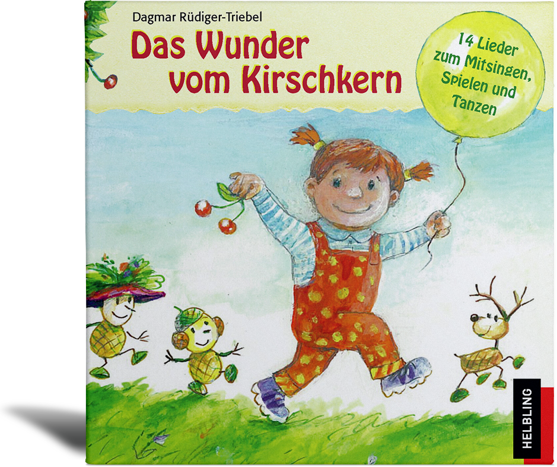

|

|
Gefallen Euch die Lieder?
14 Lieder von Dagmar Rüdiger-Triebel sind auch auf CD erhältlich:
Jetzt bestellen auf www.helblingmusik4kids.de!
„Das Wunder vom Kirschkern“ lädt Kleinkinder mit ihren Eltern ein, die Geheimnisse unserer heimischen Natur zu entdecken und zu erleben. Die aufwendig produzierten Lieder begleiten den Alltag und werden rasch zu beliebten Ohrwürmern. Von Dagmar Rüdiger-Triebel sind zwei weitere CDs zum Thema erschienen: „Die Drachenschatzjagd“ (ab 4 Jahre) und „Kennst du das Tier“ (6–11 Jahre).